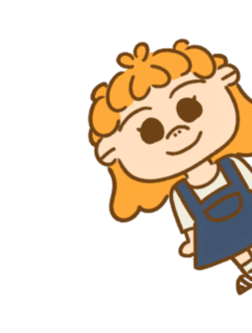
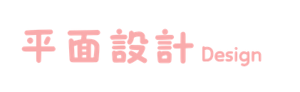
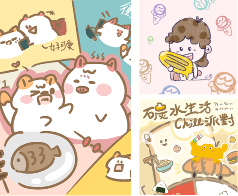
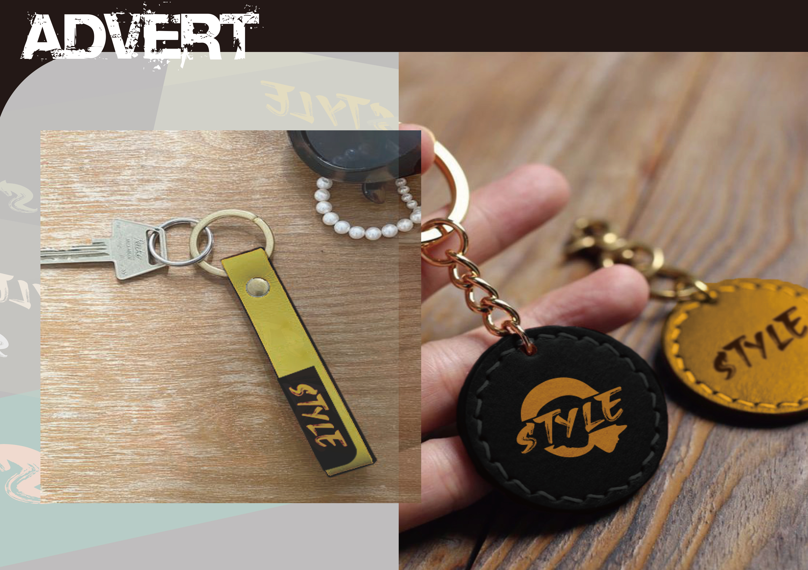
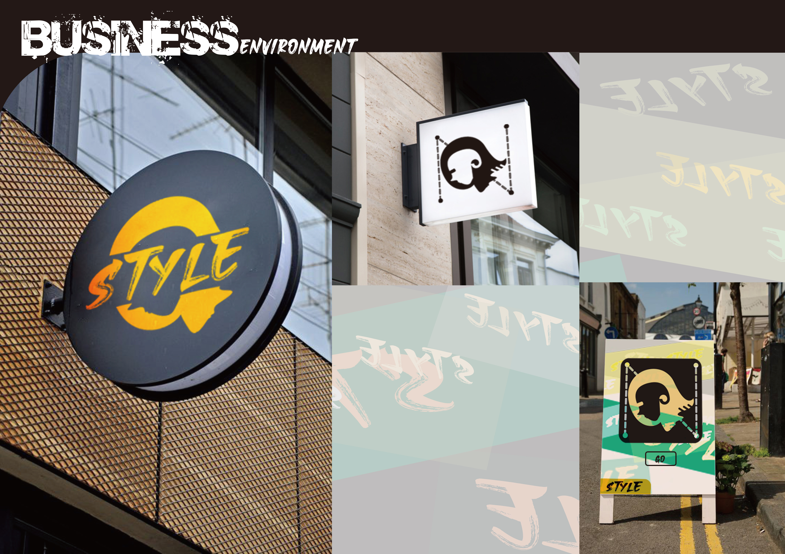
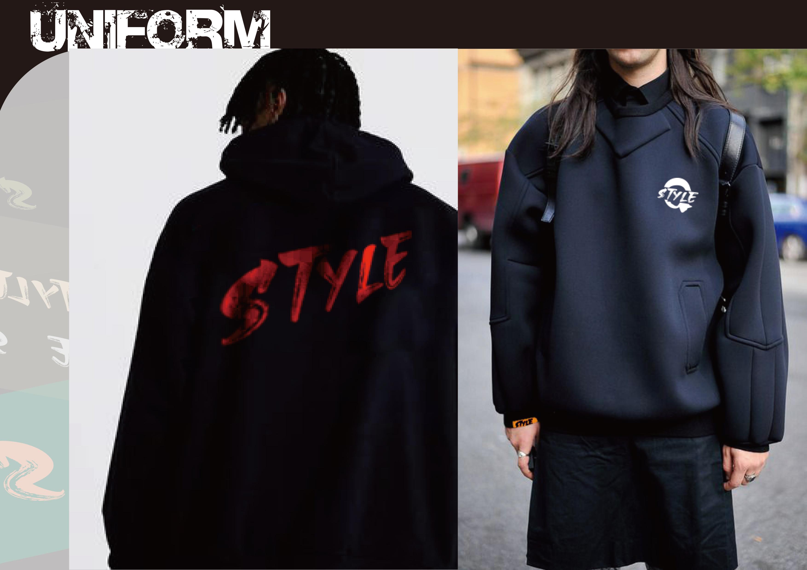
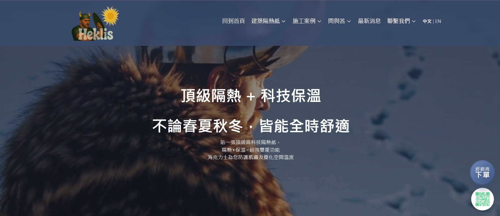
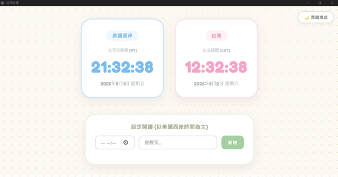
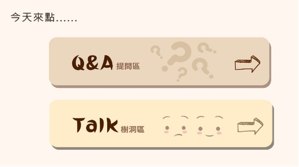

我擅長以療癒系插畫風格進行角色開發與主視覺設計，賦予品牌獨特的親和力與生命力。多項專案實務經驗讓我能捕捉客戶的品牌調性，提供從品牌視覺識別到實體展場物料的完整設計方案。此外，我亦經營個人插畫品牌，以暖心小動物為核心角色，透過視覺在社群傳遞療癒力量。
Specializing in healing-style illustration, I excel at character development and key visual design, infusing brands with a unique sense of warmth and vitality. With extensive project experience, I am skilled at capturing a brand’s core essence offering comprehensive design solutions ranging from Visual Identity (VI) to physical exhibition materials. Furthermore, I manage my own illustration brand featuring heartwarming animals, using visual storytelling to share healing energy across social media.




在網頁開發領域中，我時常擔任技術與溝通的橋樑，擅長將客戶的文字需求，精確轉譯為具備美感與易用性的視覺化介面。利用設計基礎審美與程式邏輯，能包辦從需求訪談、UI/UX 介面實作到前後端系統串接的完整流程，而在每一次的專案開發中，我不斷精進此跨域能力，致力於為客戶打造兼具視覺張力與穩定效能的數位產品。
In web development projects, I serve as a vital bridge between technology and communication. I excel at translating abstract client requirements into intuitive, aesthetic, and user-friendly interfaces. By leveraging my design sensibilities and programming logic, I manage the entire end-to-end process—from initial client consulting and UI/UX implementation to seamless front-end and back-end integration. Through every project, I continuously refine my cross-disciplinary expertise, dedicated to creating digital products that balance visual impact with robust performance.


App Development
在此AI應用系統，我主要負責學生功能之衝刺練習題(客製化學習輔助)製作與最後網站整合
For this AI application system, I was primarily responsible for developing the sprint practice exercises for students (customized learning support) and integrating them into the final website.

一套分析學生的情緒、富同理心理論以及 ChatGPT 的系統軟體
A software system that analyzes students' emotions, incorporates a theory of empathy, and utilizes ChatGPT